Administrator sistem memegang kendali atas siapa yang boleh masuk dan kapan periode dibuka atau dikunci — bukan atas isi akreditasinya. Anda tidak menyetujui tagihan, tidak menulis narasi, dan tidak mengunggah bukti. Pembagian ini disengaja: orang yang bisa mengubah daftar pengguna sebaiknya bukan orang yang sama dengan yang memutuskan sebuah bukti sah atau tidak.
Bila Anda perlu melakukan sesuatu yang bukan wewenang admin, jangan mencari jalan pintas lewat basis data. Mintalah kepada ketua task force, atau — bila memang perlu memeriksa sendiri apa yang dilihat seseorang — gunakan fitur Masuk sebagai yang dijelaskan di bawah.
Dasbor
Dasbor menampilkan keadaan periode berjalan. Sebagai admin Anda melihat ubin yang sama dengan peran lain, tetapi tidak ada tombol tindakan di dalamnya.
Angka Progres bobot selalu dihitung dari bobot elemen, bukan dari cacah tagihan. Dua puluh tagihan ringan yang selesai tidak menggeser angka sebanyak satu elemen berbobot besar, dan memang begitu seharusnya.
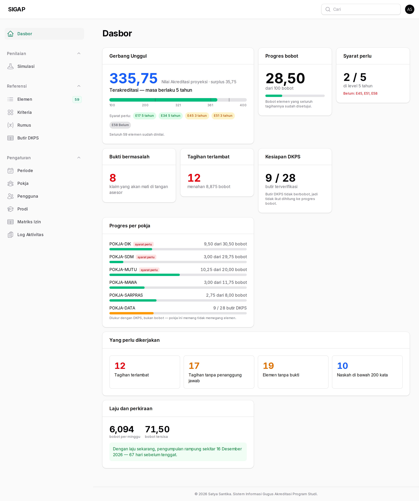
Pengguna
Seluruh akun dibuat di sini. Tidak ada pendaftaran mandiri, tidak ada lupa kata sandi lewat surel — bila seseorang kehilangan sandinya, Anda yang menyetel ulang.
Menonaktifkan pengguna lebih baik daripada menghapusnya. Akun yang dinonaktifkan ditolak masuk dengan pesan yang jelas, sementara seluruh jejaknya di riwayat tagihan tetap utuh dan tetap bisa dibaca.
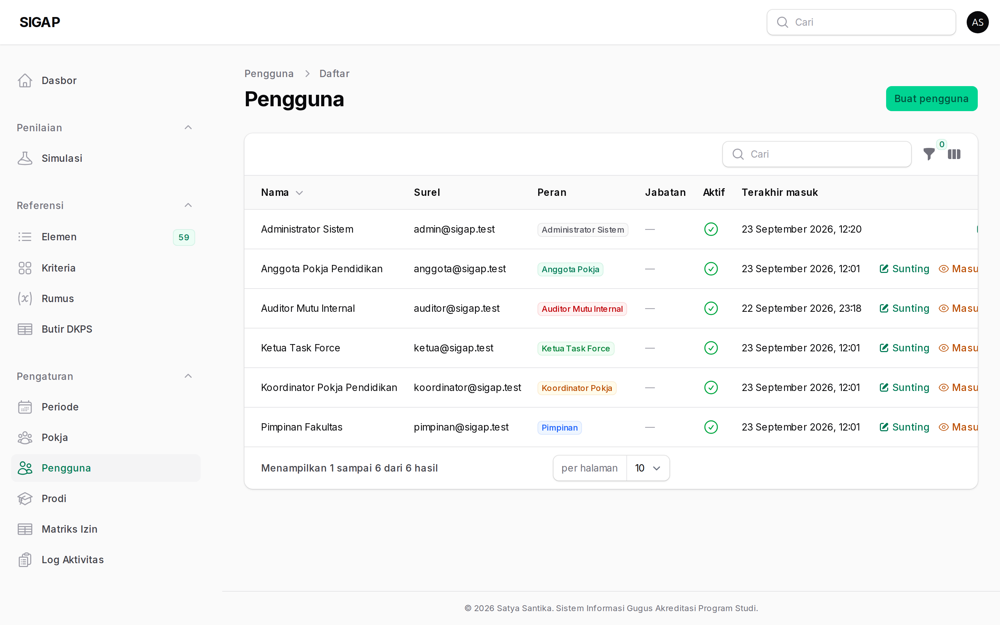
Periode
Satu periode mewakili satu siklus akreditasi, dan TS-nya (tahun sekarang) ditentukan di sini. Seluruh label tahun di DKPS — TS, TS-1, TS-2 — diturunkan dari angka itu, tidak ada satu pun yang ditulis mati di dalam kode.
Mengunci periode menutup seluruh penulisan untuk semua peran, termasuk ketua. Satu-satunya yang tetap bisa bergerak adalah admin lewat menu periode itu sendiri, supaya periode yang keliru dikunci masih bisa dibuka kembali.
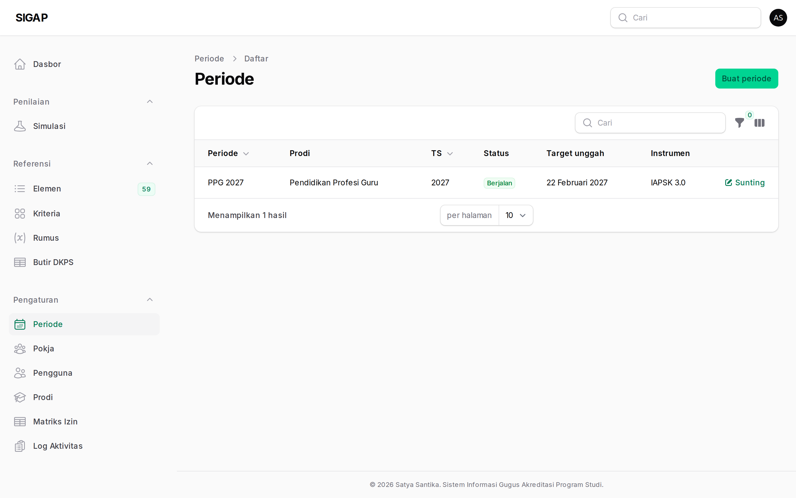
Pokja
Enam pokja membagi habis 59 elemen. Keanggotaan pokja menentukan
apa yang dilihat koordinator dan anggota: lingkup
pokjanya pada matriks izin berarti "hanya baris yang
pokjanya sama dengan pokja pengguna".
POKJA-DATA berbeda dari lima lainnya — ia tidak memegang elemen, melainkan mengisi dan memverifikasi DKPS.
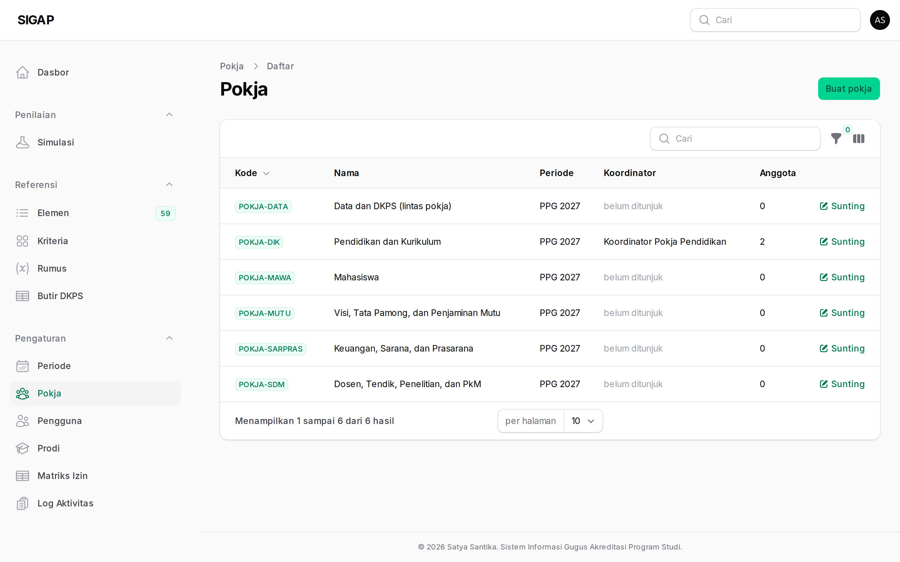
Matriks izin
Halaman hanya-baca berisi 144 sel: 24 aksi × 6 peran. Inilah jawaban atas pertanyaan "kenapa tombol itu tidak muncul di layar saya". Siapa pun boleh membukanya sendiri tanpa bertanya.
Matriks tidak bisa disunting dari layar. Mengubahnya berarti
menyunting data/izin.json lalu menjalankan seeder, dan
perubahan itu tercatat di riwayat git.
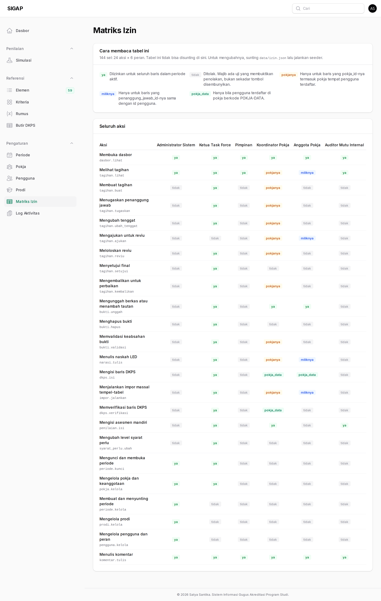
Log aktivitas
Tempat seluruh jejak berkumpul dalam satu urutan waktu. Kolom Sebenarnya hanya terisi bila tindakan itu dilakukan seseorang yang sedang menyamar.
Catatan ini tidak bisa diubah dan tidak bisa dihapus — penolakannya dipasang di tingkat model, bukan sekadar disembunyikan tombolnya. Tidak ada layar dan tidak ada perintah artisan yang bisa merapikannya di belakang.
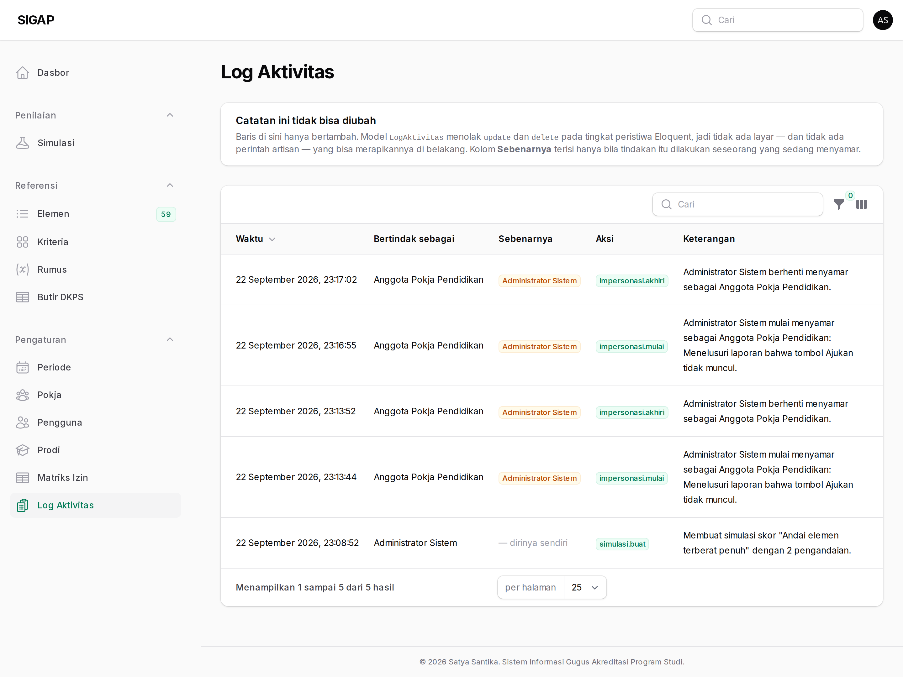
Masuk sebagai — meminta alasan
Tombol Masuk sebagai ada di setiap baris daftar pengguna, kecuali baris admin lain dan baris Anda sendiri. Menekannya membuka modal yang mewajibkan alasan.
Alasan itu bukan formalitas. Ia satu-satunya bagian dari jejak yang menjelaskan mengapa; tanpanya, log hanya memberitahu bahwa admin pernah menjadi ketua selama sebelas menit tanpa ada yang bisa menilai apakah itu wajar.
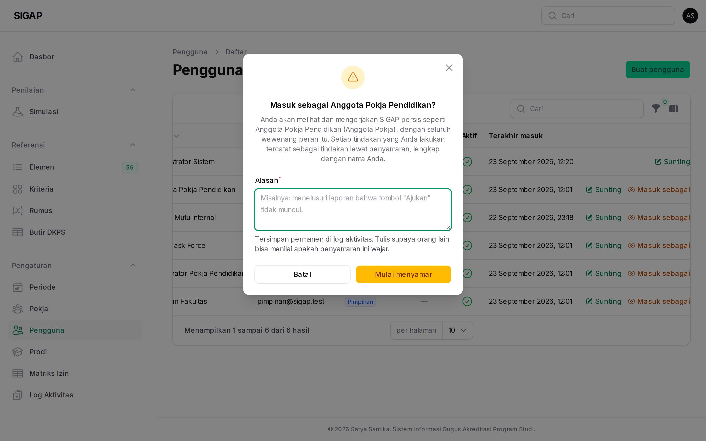
Selama menyamar
Spanduk kuning menempel di atas setiap halaman dan tidak bisa ditutup. Selama menyamar Anda memegang seluruh wewenang peran yang ditiru — termasuk menyetujui tagihan. Tidak ada pagar yang menahan; yang menjaga pertanggungjawaban adalah jejaknya.
Ada dua jalan keluar, keduanya tidak mengakhiri sesi Anda: tombol Kembali ke akun saya di spanduk, dan menu serupa di dalam menu pengguna di pojok kanan atas.
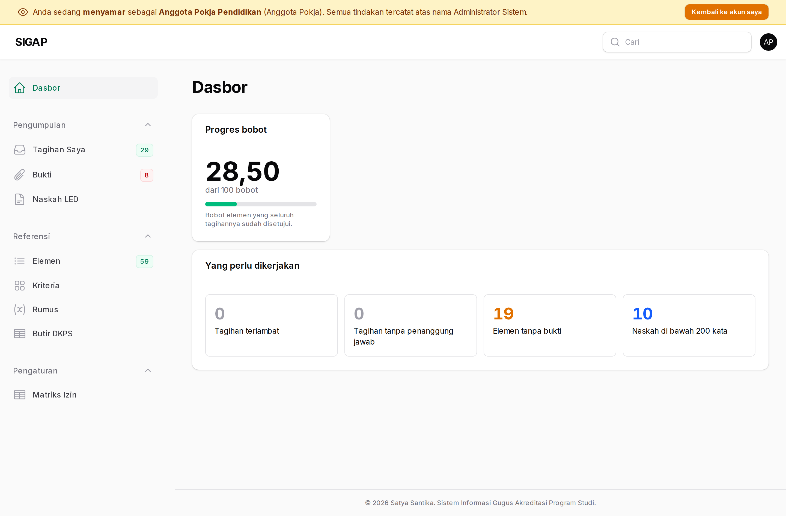
Jejak yang ditinggalkan
Setiap tindakan selama penyamaran menyimpan dua nama: pengguna yang
ditiru dan admin di baliknya. Bukan hanya di log aktivitas —
tagihan_riwayat, narasi_versi, dan
komentar semuanya membawa kolom yang sama.
Akibatnya sebuah persetujuan tagihan selalu bisa dilacak ke tangan yang benar-benar menekannya.

Simulasi
Dua bentuk simulasi, keduanya dibuat dan dihapus seperlunya.
Pengandaian skor menjawab "bagaimana bila E58 naik ke 4?" dengan menghitung ulang NA memakai skor yang Anda andaikan. Tabel penilaian tidak tersentuh sama sekali — dan itu syarat yang tidak bisa ditawar, karena begitu simulasi boleh menulis ke sana, tidak ada lagi cara membedakan skor yang dinilai dari skor yang diandaikan.
Periode latihan menyalin kerangka periode sungguhan
— pokja dan seluruh tagihannya — ke periode baru bertanda
[SIMULASI]. Narasi, bukti, dan penilaian tidak ikut
disalin; periode latihan memang dimulai kosong untuk dilatih mengisinya.
Ia tidak pernah muncul sebagai periode berjalan.
Menghapus periode latihan membuang periodenya beserta seluruh isinya, permanen. Data periode sungguhan tidak tersentuh.
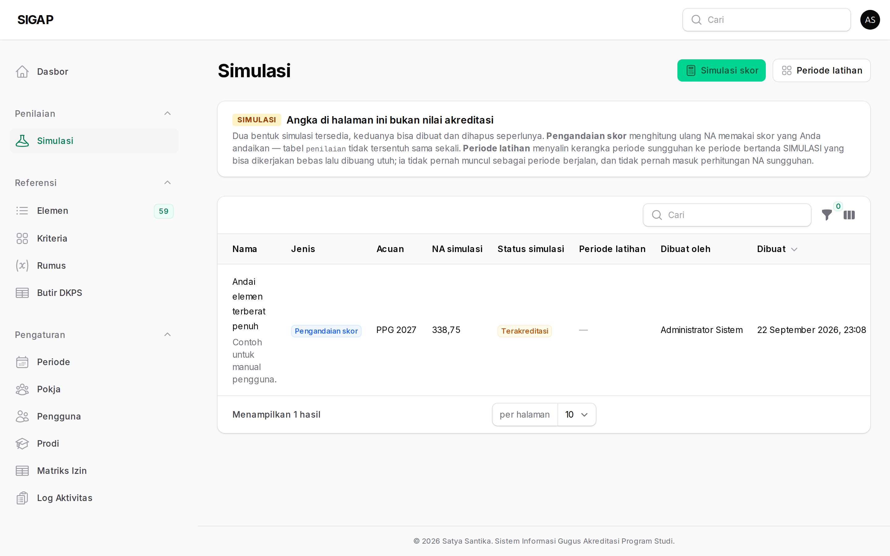
Program studi
Identitas prodi, UPPS, dan perguruan tinggi. Jarang disentuh setelah pemasangan, tetapi ada karena sistem ini dirancang untuk bisa menaungi lebih dari satu prodi tanpa migrasi ulang.
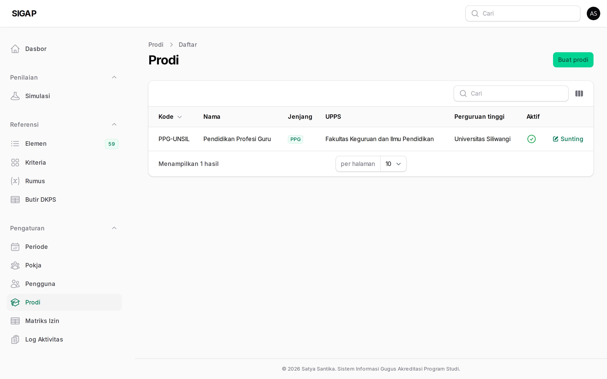
Keluar
Keluar selalu bertanya lebih dulu. Tombolnya bertetangga dengan tombol profil dan penukar tema, dan satu salah klik di tengah menyusun narasi berarti kehilangan isian yang belum tersimpan.
Bila Anda sedang menyamar, modalnya berbunyi berbeda: ia mengingatkan bahwa keluar mengakhiri penyamaran sekaligus sesi Anda, dan menyarankan Kembali ke akun saya bila itu yang Anda maksud.
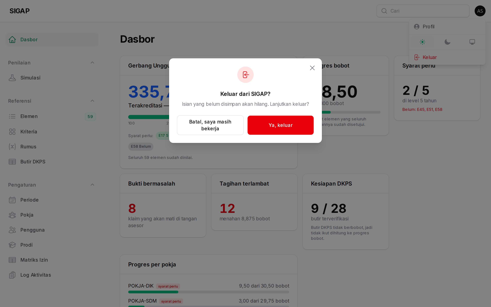